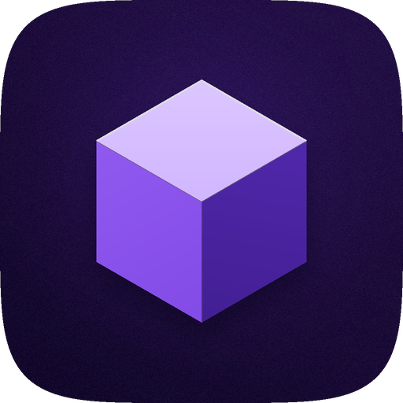
tweaks & themes for iOS 12 · by purplesquarecube
Repo address
https://purplesquarecube.github.io/purplerepo/
Each one adds a page to the Settings app.
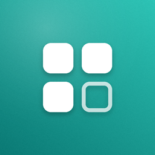
Clean up the Home Screen.
Hide icon labels, notification badges and page dots, or make the dock background clear. Changes apply instantly.
Settings > Tidy
download .deb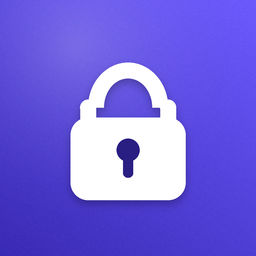
Double-tap to lock.
Double-tap an empty spot on the Home Screen or Dock to lock your device, so you never have to reach for the power button.
Settings > TapLock
download .deb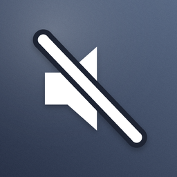
No more pop-ups.
Hide the volume, brightness, ringer and rotation-lock pop-ups. The change still happens, you just don't see the overlay.
Settings > QuietHUD
download .deb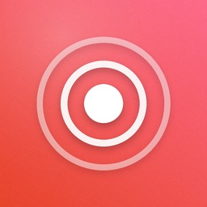
Icons that answer back.
Play a sound and bounce the icon when you tap an app. Pick from six system sounds and set how bouncy it is.
Settings > TapFeel
download .deb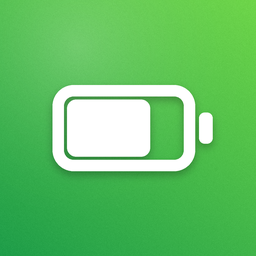
A battery meter you can see in any app.
A thin line along the top or bottom of the screen that shows your battery level on top of every app. Turns green while charging, orange under 50% and red under 20%.
Settings > BatteryLine
download .deb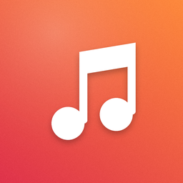
A different song in every app.
Import your own MP3s and choose a song for each app. It plays while that app is open and stops when you leave.
Settings > AppTunes
download .deb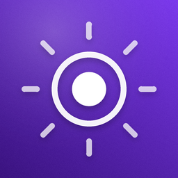
50 ways to open an app.
Pick one of 50 opening effects (iris shapes, wipes, curtains, blinds, tile dissolves and more). Preview them right in Settings.
Settings > LaunchFX
download .deb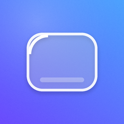
A glass look for iOS 12.
Bright glass edges, a soft shine and a highlight that moves as you tilt the phone. Works on the Dock, folders, notifications and Control Center.
Settings > Liquid Glass
download .debIcon themes for Snowboard or Anemone. Covers the stock Apple apps plus Sileo, Zebra, Cydia and Filza. Apps without an icon here keep their normal one.
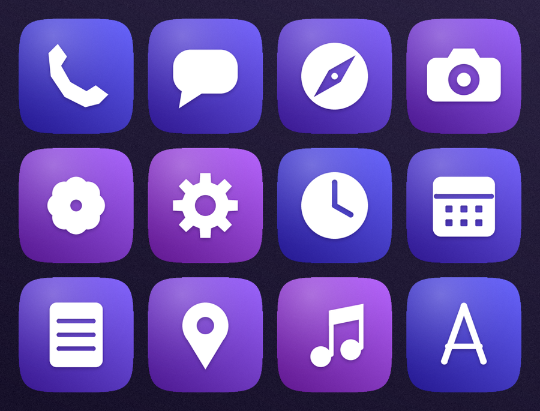
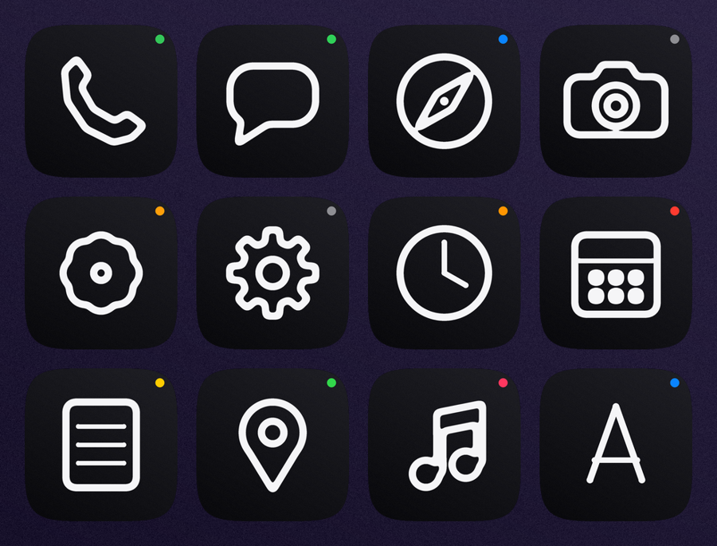
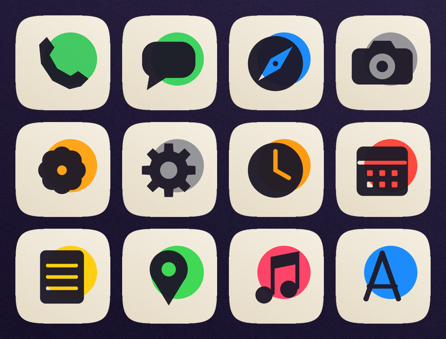
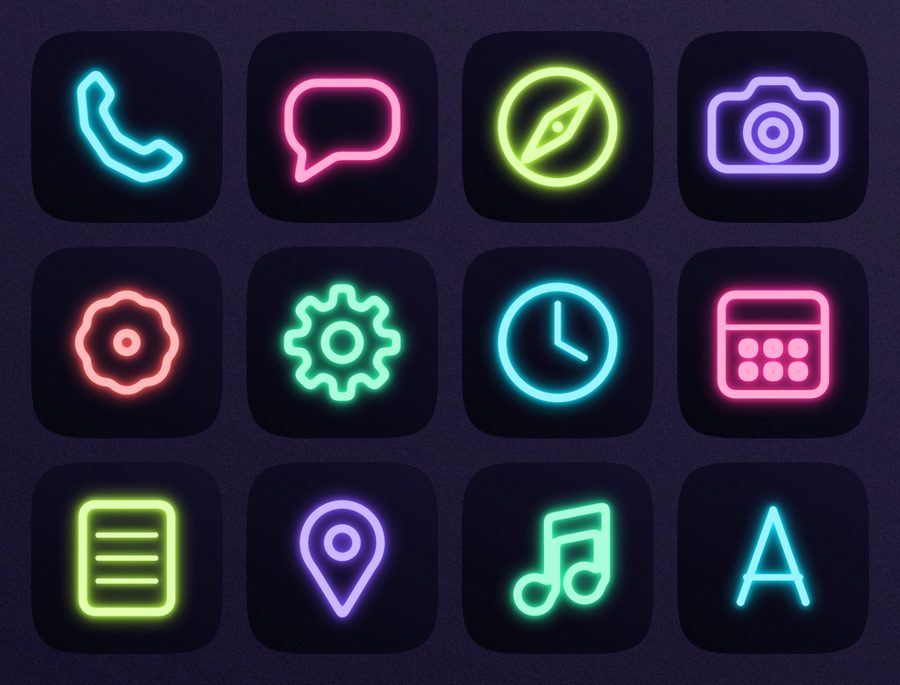
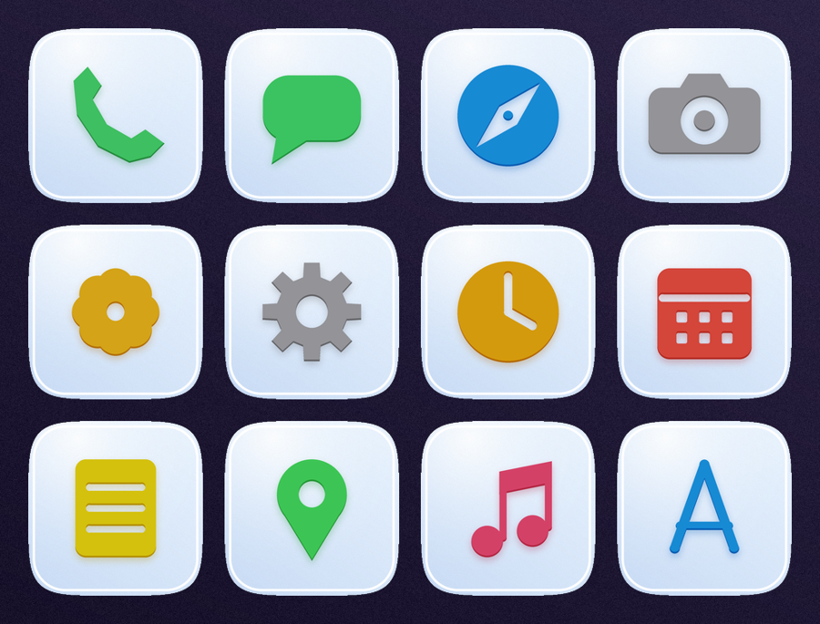